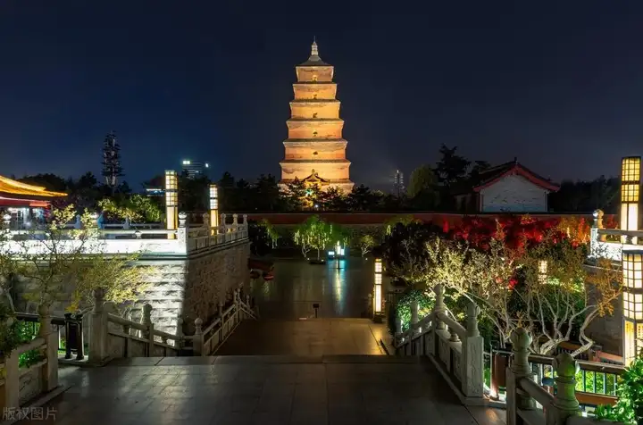
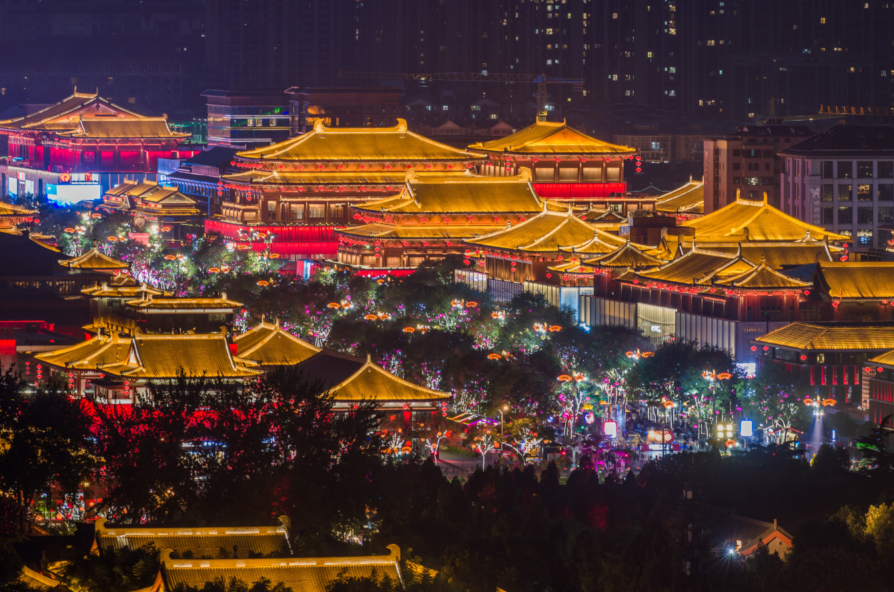
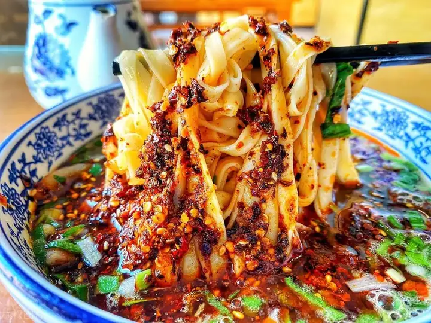

Save this guide if you plan to visit Xi’an in March or April! This complete guide includes full itinerary, local secrets, scam avoidance, food and homestay. Follow local advice and you will NOT get scammed!
Day 1: Ancient City Culture First Experience

Bell & Drum Tower Square
See the grand Bell Tower and simple Drum Tower in morning light. Use the free viewing platform
on 5th floor of Kaiyuan Mall to take photos of both towers together.
Bell Tower Community
At noon, walk into alleys and try Lao Mi Jia Paomo (Pita Bread Soaked in Lamb Soup). Tearing the
pita bread yourself makes it more delicious. Tender meat, rich soup with garlic is perfect.
Xi’an City Wall
Rent a bike and ride around Yongning Gate in the afternoon. Willow buds sprout along the moat.
Feel the weight of Chang’an City between old bricks and tiles.
Muslim Quarter – Dapiyuan
Avoid crowds on the main street in the evening. Turn into alleys for Dingjia Crispy Beef. Tender
meat over rice with sour plum soup is very satisfying.
Gaojia Courtyard
Visit the Ming-Qing mansion at night. Watch a shadow puppet show. Kids will love the lively show
under lights.
Day 2: Travel Through Qin & Tang History

Terracotta Warriors
Go early to Pit 1. See the unique Qin army with different faces. Use VIP channel to skip queues.
Guide explanation is very interesting.
Lintong Tieluo Oil Cake
At noon, try crispy and soft oil cake with buckwheat noodles. A light and filling local hidden
spot.
Huaqing Palace
Climb Li Mountain in the afternoon to see the love relics of Emperor Xuanzong and Yang Yuhuan.
The lotus brick floor in Haitang Pool is extremely delicate.
Show: *Song of Everlasting Sorrow*
Watch the real-scene light show at night. The romantic love story touches many viewers.
Lintong Night Market
After the show, enjoy street food – grilled bread, fried cold noodles. End the day with full
vitality.
Day 3: Culture & Local Life Finale

Shaanxi History Museum
Get free tickets in the morning! Hejiabao treasures, golden horse cup, Tang tri-color camel are
all national treasures.
Saige Chang’an Big Restaurant
At noon, try Hulu Chicken (calabash-shaped crispy chicken) and Writing Brush Pastry. Perfect for
photos and meals.
Big Wild Goose Pagoda
Climb the pagoda in the afternoon to overlook Xi’an. Teach children the story of Xuanzang. The
nearby Daci’en Temple Park is great for kids.
Grand Tang Mall
In the evening, enjoy interactive shows, non-falling performances and light show at 21:00.
Taking photos in Hanfu makes you feel like traveling back to Tang Dynasty.
Tang Paradise (Optional)
If you have time, buy night ticket for water-screen movie and Hanfu dance shows in front of
Ziyun Tower.
Xi’an Food Guide

Roujiamo (Chinese Hamburger)
Crispy outside, soft inside. Filled with braised pork. Local favorite: Wuzi Road Zhang Ji. Pair
with Bingfeng soda – amazing!
Lamb Paomo
Tearing pita bread is the soul! Tear into small pieces, then cook in soup. Rich soup, tender
meat. Liu Xin is popular among locals; go early – sold out in afternoon.
Biangbiang Noodles
Wide like a belt. Hand-pulled on site. Mix with chili oil, vinegar and garlic – spicy and
satisfying.
Zenggao (Sticky Rice Cake)
Soft glutinous rice with jujubes. Sweet but not greasy. Fatty Zenggao in Muslim Quarter; limited
daily – arrive before 7 AM.
Hulu Chicken
Boiled, steamed then fried. Golden crispy skin, tender meat. Xi’an Fanzhuang is classic. Pair
with sweet osmanthus wine – perfect!
Xi’an Homestay Recommendation
Recommended Homestay: 【Grapefruit · Maiden Heart】
Perfect location: Bell Tower area, near Bell Tower and Muslim Quarter. 3 minutes to South City Wall & Shuncheng Alley Night Market. Roman-style, pink theme, carved walls, Roman columns, vintage fireplace. Sunken round pool in living room – great for photos!
Two double beds with thick mattresses, 4-piece suit, HD projector. Enjoy cinema experience at home.